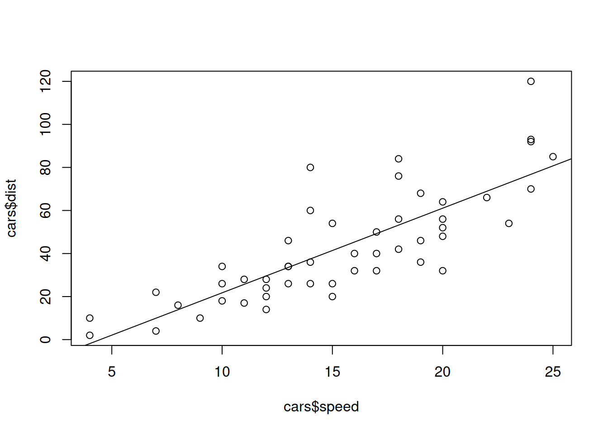
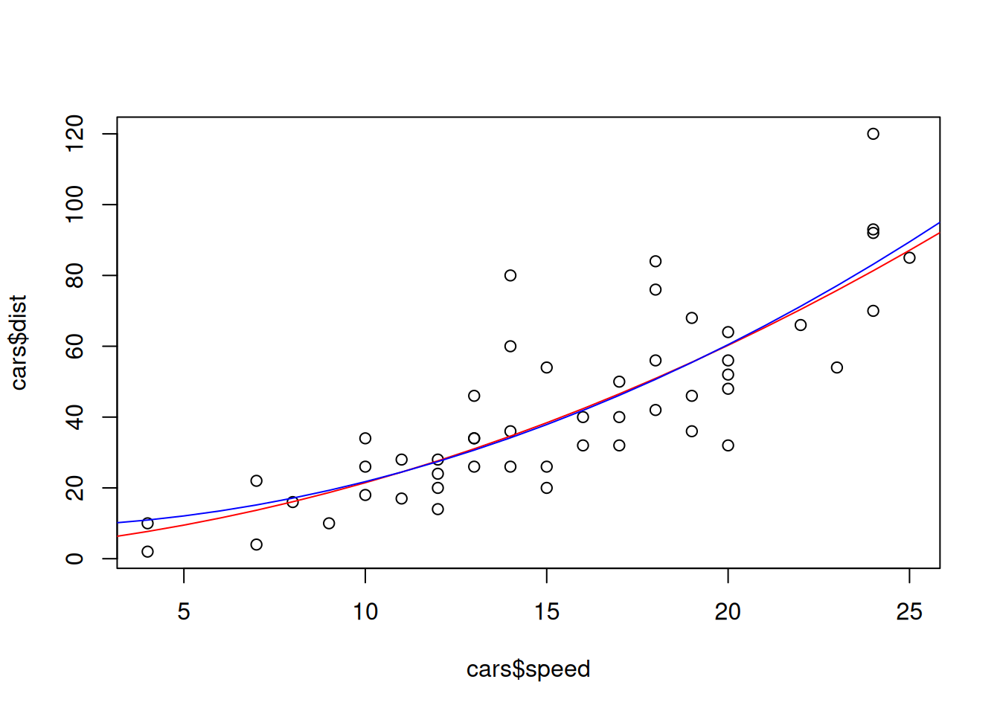

Chapter 5 Transformations
](slides/gifs/05-Transformations.gif)
Figure 5.1: Download Slides
5.1 Squared Terms in Regression Models
##
## Call:
## lm(formula = dist ~ 1 + speed, data = cars)
##
## Residuals:
## Min 1Q Median 3Q Max
## -29.069 -9.525 -2.272 9.215 43.201
##
## Coefficients:
## Estimate Std. Error t value Pr(>|t|)
## (Intercept) -17.5791 6.7584 -2.601 0.0123 *
## speed 3.9324 0.4155 9.464 1.49e-12 ***
## ---
## Signif. codes: 0 '***' 0.001 '**' 0.01 '*' 0.05 '.' 0.1 ' ' 1
##
## Residual standard error: 15.38 on 48 degrees of freedom
## Multiple R-squared: 0.6511, Adjusted R-squared: 0.6438
## F-statistic: 89.57 on 1 and 48 DF, p-value: 1.49e-12
##
## Call:
## lm(formula = dist ~ 1 + speed_sq, data = df)
##
## Residuals:
## Min 1Q Median 3Q Max
## -28.448 -9.211 -3.594 5.076 45.862
##
## Coefficients:
## Estimate Std. Error t value Pr(>|t|)
## (Intercept) 8.86005 4.08633 2.168 0.0351 *
## speed_sq 0.12897 0.01319 9.781 5.2e-13 ***
## ---
## Signif. codes: 0 '***' 0.001 '**' 0.01 '*' 0.05 '.' 0.1 ' ' 1
##
## Residual standard error: 15.05 on 48 degrees of freedom
## Multiple R-squared: 0.6659, Adjusted R-squared: 0.6589
## F-statistic: 95.67 on 1 and 48 DF, p-value: 5.2e-13##
## Call:
## lm(formula = dist ~ 1 + speed + speed_sq, data = df)
##
## Residuals:
## Min 1Q Median 3Q Max
## -28.720 -9.184 -3.188 4.628 45.152
##
## Coefficients:
## Estimate Std. Error t value Pr(>|t|)
## (Intercept) 2.47014 14.81716 0.167 0.868
## speed 0.91329 2.03422 0.449 0.656
## speed_sq 0.09996 0.06597 1.515 0.136
##
## Residual standard error: 15.18 on 47 degrees of freedom
## Multiple R-squared: 0.6673, Adjusted R-squared: 0.6532
## F-statistic: 47.14 on 2 and 47 DF, p-value: 5.852e-12plot(cars$speed,cars$dist)
model <- function(x){2.47 + 0.91 * x + 0.099 * x^2}
points(1:100, sapply(1:100, model), col="red",type="l")
model_sqonly <- function(x){8.86 + 0.129 * x^2}
points(1:100, sapply(1:100,model_sqonly), col="blue",type="l")
##
## Call:
## lm(formula = log(dist) ~ 1 + speed + speed_sq, data = df)
##
## Residuals:
## Min 1Q Median 3Q Max
## -0.97128 -0.23532 -0.02021 0.24297 0.87944
##
## Coefficients:
## Estimate Std. Error t value Pr(>|t|)
## (Intercept) 0.639838 0.406555 1.574 0.1222
## speed 0.276815 0.055815 4.959 9.65e-06 ***
## speed_sq -0.005167 0.001810 -2.854 0.0064 **
## ---
## Signif. codes: 0 '***' 0.001 '**' 0.01 '*' 0.05 '.' 0.1 ' ' 1
##
## Residual standard error: 0.4164 on 47 degrees of freedom
## Multiple R-squared: 0.7241, Adjusted R-squared: 0.7124
## F-statistic: 61.69 on 2 and 47 DF, p-value: 7.177e-14##
## Call:
## lm(formula = log(dist) ~ -1 + speed + speed_sq, data = df)
##
## Residuals:
## Min 1Q Median 3Q Max
## -0.76424 -0.26184 0.00965 0.30250 0.98119
##
## Coefficients:
## Estimate Std. Error t value Pr(>|t|)
## speed 0.3611914 0.0157595 22.919 < 2e-16 ***
## speed_sq -0.0077104 0.0008271 -9.322 2.4e-12 ***
## ---
## Signif. codes: 0 '***' 0.001 '**' 0.01 '*' 0.05 '.' 0.1 ' ' 1
##
## Residual standard error: 0.4228 on 48 degrees of freedom
## Multiple R-squared: 0.9869, Adjusted R-squared: 0.9863
## F-statistic: 1808 on 2 and 48 DF, p-value: < 2.2e-16##
## Call:
## lm(formula = log(dist) ~ -1 + speed_sq, data = df)
##
## Residuals:
## Min 1Q Median 3Q Max
## -2.2594 -0.1085 0.8586 1.6941 2.5656
##
## Coefficients:
## Estimate Std. Error t value Pr(>|t|)
## speed_sq 0.0107233 0.0006599 16.25 <2e-16 ***
## ---
## Signif. codes: 0 '***' 0.001 '**' 0.01 '*' 0.05 '.' 0.1 ' ' 1
##
## Residual standard error: 1.446 on 49 degrees of freedom
## Multiple R-squared: 0.8435, Adjusted R-squared: 0.8403
## F-statistic: 264.1 on 1 and 49 DF, p-value: < 2.2e-165.2 Elasticity
An elasticity coefficient is the ratio of the percentage change in the forecast variable (\(y\)) to the percentage change in the predictor variable (\(x\)). Mathematically, the elasticity is defined as \((dy/dx)\times(x/y)\). Consider the log-log model, \[ \log y=\beta_0+\beta_1 \log x + \varepsilon. \] Express \(y\) as a function of \(x\) and show that the coefficient \(\beta_1\) is the elasticity coefficient.
\[ \log(y) = \beta_0 + \beta_1 \log(x) + \varepsilon \qquad \mid \mathbb{E}(\cdot \mid x)\] Taking the conditional expectation on the left and right hand side of the quation
\[\mathbb{E}(\log(y) \mid x) = \mathbb{E}(\beta_0 + \beta_1 \log(x) + \varepsilon \mid x)\] leads to the following as \(\mathbb{E}(\varepsilon\mid x) = 0\).
\[ \log(y) = \beta_0 + \beta_1 \log(x) \qquad \mid \frac{\partial}{\partial x}\] After taking derivatives of the left and right side with respect to \(x\) we receive. The left hand side follows due to the implicit differentiation.
\[ \frac{\partial}{\partial x}\log(y) = \frac{\partial}{\partial x}(\beta_0 + \beta_1 \log(x))\]
\[\frac{\partial\log(y)}{\partial x} = 0 + \beta_1 \frac{1}{x}\] \[\frac{1}{y} \frac{\partial y}{\partial x} = \beta_1 \frac{1}{x} \qquad \mid \cdot x\]
After rearranging we get the definition of the the elasticity.
\[\beta_1 = \frac{x}{y} \frac{\partial y}{\partial x}\]